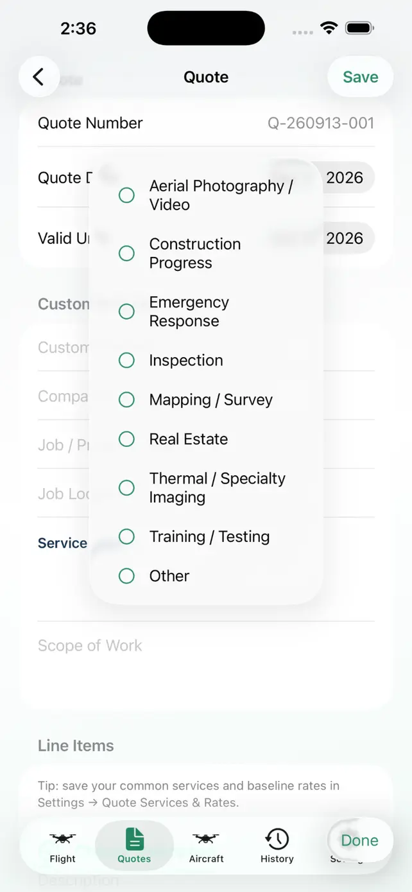

Private by design
No UAScribe account is required. Your saved business and flight records remain on your device.
DRONE QUOTES & FLIGHT RECORDS
Build a customer quote, document the operation, complete preflight, and export a polished PDF report—all from your iPhone or iPad.
3 completed report exports to try · One-time Pro unlock · No subscription

 QUOTE → PREFLIGHT → REPORT
QUOTE → PREFLIGHT → REPORT
ONE CONNECTED WORKFLOW
UAScribe keeps the business side and the flight record together without turning a solo operation into an enterprise system.
Build a clear customer quote with reusable services and saved pricing.
Explore quotes → 02 / DOCUMENTRecord the mission, aircraft, RPIC, crew, conditions, preflight, and flight details.
Explore flight reports → 03 / DELIVERCreate a branded PDF and optionally include the linked quote in the same export.
See PDF reporting →BUILT FOR THE FIELD
UAScribe supports documentation. Airspace and weather information remain informational and do not grant authorization or replace the pilot’s preflight responsibilities.


FOR INDEPENDENT PILOTS & SMALL TEAMS
No UAScribe account is required. Your saved business and flight records remain on your device.
Add your organization name and logo to the finished mission report you share.
Try three completed report exports, then unlock unlimited exports with one purchase—not another recurring bill.
COMMON QUESTIONS
No. UAScribe is a professional documentation and quote-building app. It does not control your aircraft or grant airspace authorization.
No UAScribe account is required, and there is no monthly subscription. Saved records are stored locally on the device where you create them.
Yes. UAScribe is designed for both iPhone and iPad, including landscape use when completing forms with a larger screen or keyboard.
You can complete and export three mission reports before deciding whether to purchase the one-time Pro unlock.
FROM FIRST QUOTE TO FINAL REPORT
UAScribe is available on the App Store for iPhone and iPad. Try three completed report exports, then unlock unlimited exports with a one-time purchase.